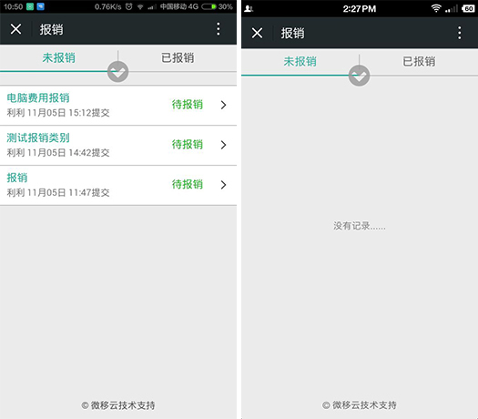
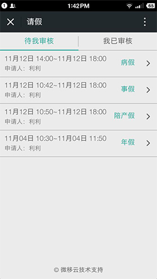

1、点击底部“签到处”选择要签到的类型。上下班打卡或开会签到。
2、点击底部“发起签到”，选择需要签到的类型和人员，发起签到。
1、考勤记录：点击“记录查询”，进入“我的签到”页面。点击任意月份，可查询该月份内的考勤记录详情。
2、进入“我发起的”页面可查看我所发起的任何签到事项，加班签到或开会签到等等各种主题签到。
1、新建主题签到：点击“发起签到”，进入“主题签到”页面。您可以新建任何主题签到，开会或者加班。
2、进入“签到处”页面可查看我的考勤签到和订在今天的所有主题签到，假如明天有开会签到，则页面会在明天显示您的开会签到。
1、点击底部“发起审批”选择“普通审批”还是“合同审批”。
2、点击底部“普通审批”，根据提示填写审批的流程。
3、填写“流程名称”、“归属部门”、“审批内容”、“备注”、“相关材料扫描件”等内容， 点击“发起审批”完成此次流程审批申请。
1、点击底部“我的记录”，选择“我的申请”页面。可查询我所有的申请以及申请的进度。
2、点击底部“抄送给我”页面可查看所有抄送给我的申请。
1、点击底部“审核记录”可查看所有需要我审核的记录，待审核的和已审核的。
1、点击底部导航“预定会议”，会进入到快速预定的页面，按照提示选择地点、日期、时间、和时长。点击确认“快速预定”按钮，根据您输入的条件，显示可用的会议室，然后按照您的会议人数多少，选择合适的会议室。最后选择参会人员确定。
1、点击底部会议查询，查看我要参加或已结束的会议。
1、点击底部导航“新建报销”，新建报销，依次填写“报销主题”、“报销部门”“报销费用”“报销事由”“报销总额”， 确定后点击“申请报销”，申请了之后如果许久没有报销下来可以点击“催办“。
点击底部“财务处理”，可查看需要您处理的其他同事提交的对公借款和对私借款，普通员工无法查看和操作 。

点击底部“报销记录”，可以查看您所有的报销事项，还有报销的审核状态。
1、点击底部导航“请假”，进入请假申请页面。选择“请假事由”，填写“请假说明”、 “职位部门”等信息，点击“申请”完成此次请假申请。
1、点击底部“我的记录”，选择“我的申请”页面。可查询我所有的申请以及申请的进度。
2、点击底部“我的记录”页面选择“抄送给我”页面可查看所有抄送给我的请假事项。
1、点击底部“审核记录”可查看所有需要我审核的记录，待审核的和已审核的。

1、按照不同的部门划分，例如：想要一位HR，直接点人力资源部就可以了、、不用从上往下挨个寻找。
在通讯录中选人，被划分成两种，一种是单选、一种是多选。单选点击一个名字之后再点其他人。第一次点击的标示会转 移到您下一次点击的名字上，多选的话则会保留，您可以按照具体要求选多个人。
1、点击底部“待我评价”选择查看未结束或已结束的评价，进行操作。
2、只要在“待我评价”看到的关于员工评价信息都有权操作。
1、点击“评价我的”，进入“评价我的”页面。点击任意一个评价，可看到各个人员的评价结果。
1、点击底部“发起评价”进入到编辑评价页面，可以发起一个员工评价。
2、填好评价主题、问题列表、选好评价人和被评价人，然后发起评价。
1、点击“评价查询”，进入“评价查询”页面。点击任意一个评价，可看到各个人员的评价信息。
1、点击底部导航“我的借款”，根据您的需要选择对应的项目，对私借款、对公借款或“借款记录”。
2、“对私借款”是针对个人的借款，“对公借款”则是针对公司业务上的借款，公私分明。
3、“借款记录”是本人所有的对公对私的借款详情。
点击底部“借款审核”，可以查看需要您处理的其他同事的借款项目。
1、点击底部“财务处理”，可查看需要您处理的其他同事提交的对公借款和对私借款，普通员工无法查看和操作 。
1、进去“问题反馈”应用，点击底部“提问题”进入到编辑问题页面，可以在页面写出你认为不合理的问题。
2、填好问题内容、修改建议、加上页面截图，就可以提交问题了。
1、我的问题页面，显示你提交的问题，已解决或者未解决。点击某个问题可以看到问题详细信息。
2、技术人员看到并作出改善之后会在“修改进展”里留言，您看到之后可以点“已解决”。
1、点击“提问排行”进去排行页面，可以看到员工提出问题的数量，但看不到具体信息。
1、进入“快递到了”应用，点击底部“快递登记”进入到快递登记页面，即可在页面录入您的快递信息。
1、快递管理页面，显示您录入的快递。选择条件查询您要看的快递。
2、点击某个快递可查看快递详情。
点击“我的快递”可以看到您所有的快递。